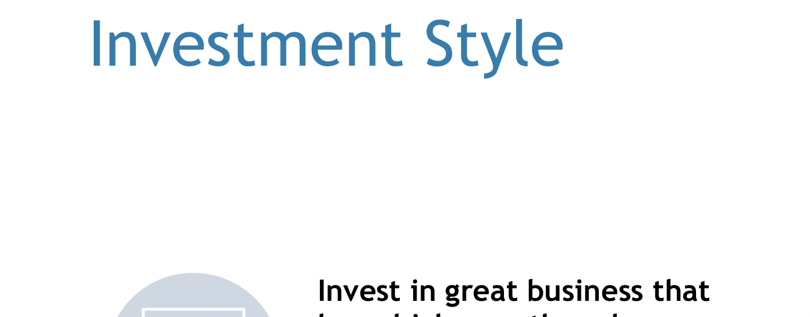
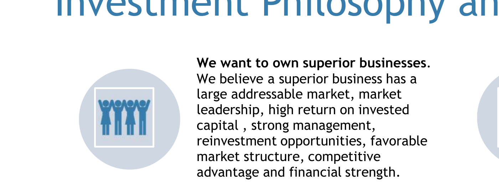
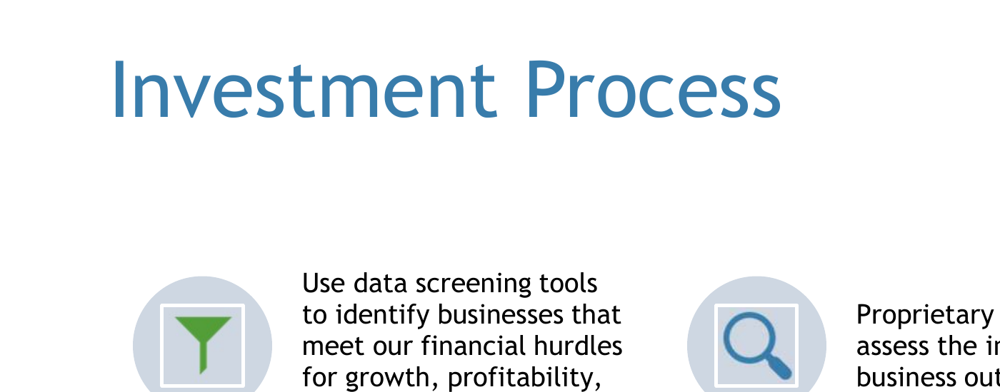

Our Investment Approach
At Ochoco Capital Management, our strategy centers on long-term capital appreciation through a disciplined, value-oriented approach. Below, we outline our style, philosophy, and investment process.
Investment Style
We strive to own companies we would be happy to hold indefinitely. While we do not adhere to a rigid value or growth label, our preference is for quality businesses with attractive free cash flow, durable competitive advantages, and capable capital allocators at the helm.
Philosophy & Investment Rules
We follow a strict internal code of investment rules designed to minimize behavioral mistakes. These include avoiding leverage, maintaining concentration in our highest conviction ideas, and only investing when we understand the business and its risks thoroughly.
Investment Process
Our process begins with deep fundamental research. We evaluate management quality, capital allocation, industry dynamics, and valuation. We aim to patiently wait for compelling opportunities and act decisively when they arise.
Invest With Confidence
Ochoco Capital Fund, LP is open to accredited investors with a minimum investment of $500,000.
- No management or entry fees
- 20% performance fee only on returns above 5%
- High-water mark reset at 20% of any losses
- Monthly performance updates and quarterly letters
- Permanent investment from founder of $2M
Ready to learn more about partnering with Ochoco Capital?
Contact Us Here